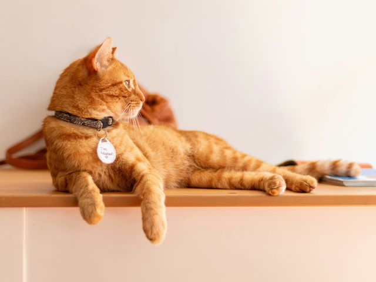
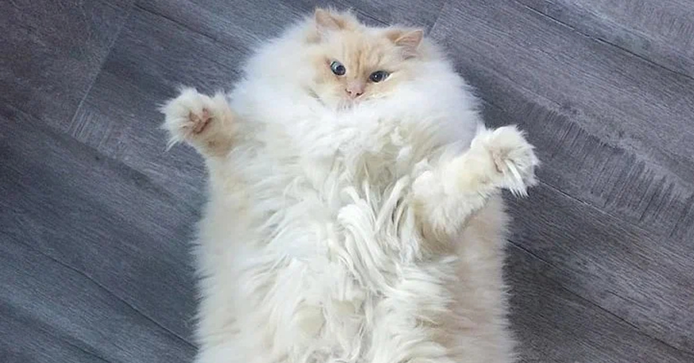
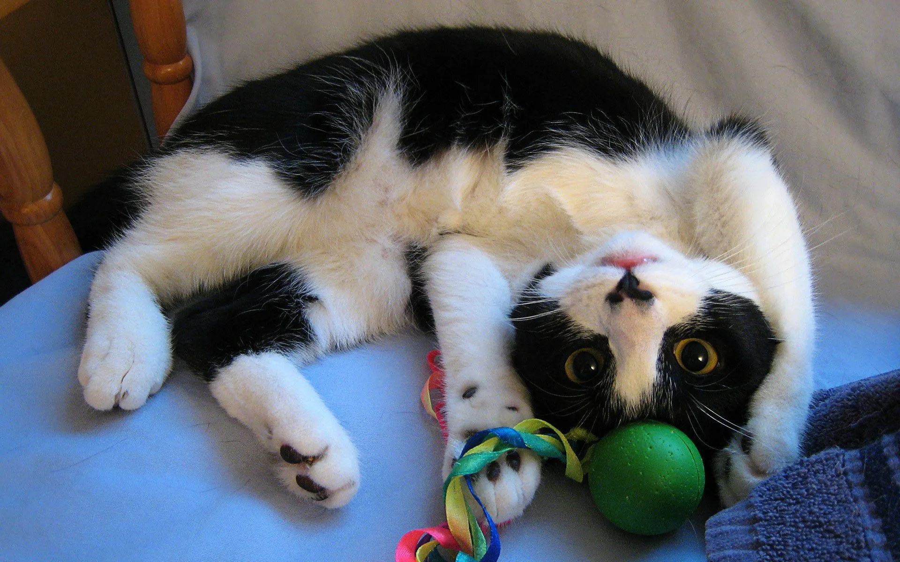
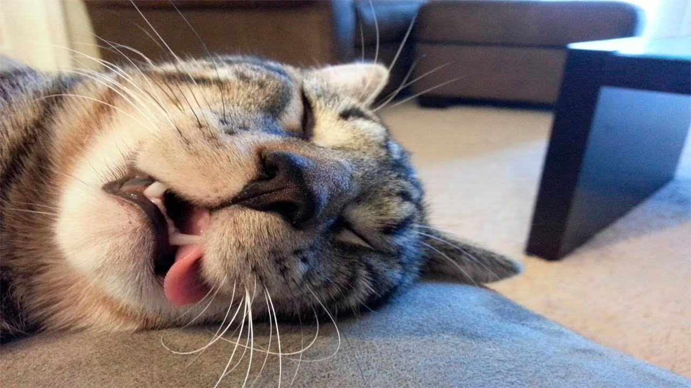
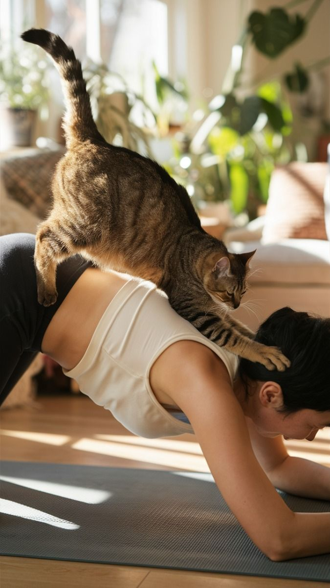
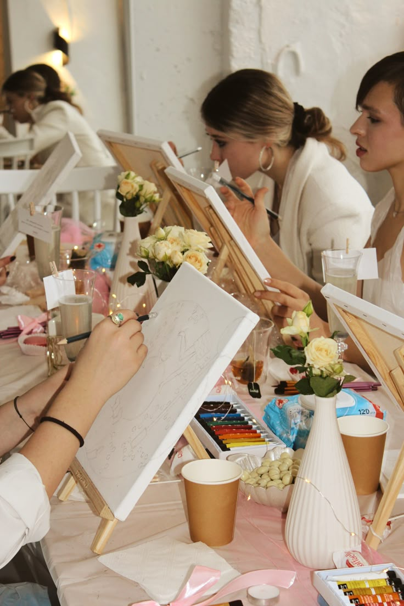
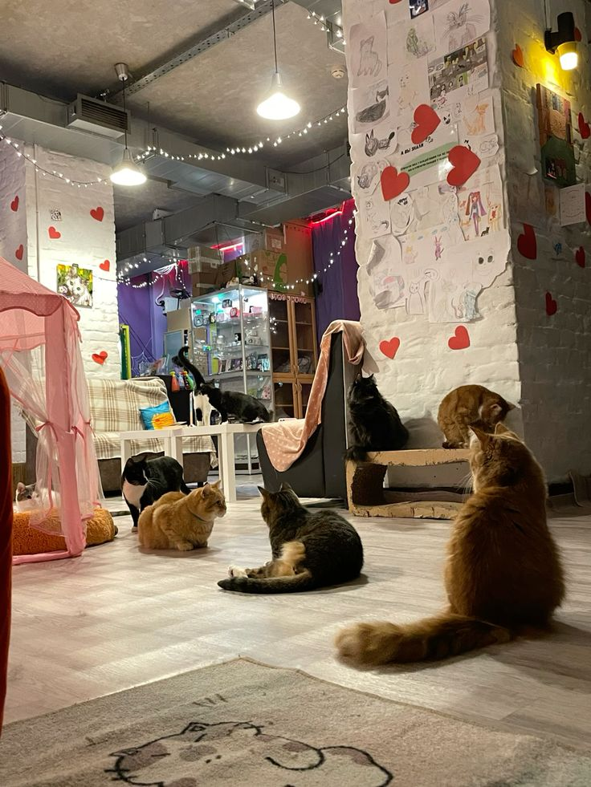
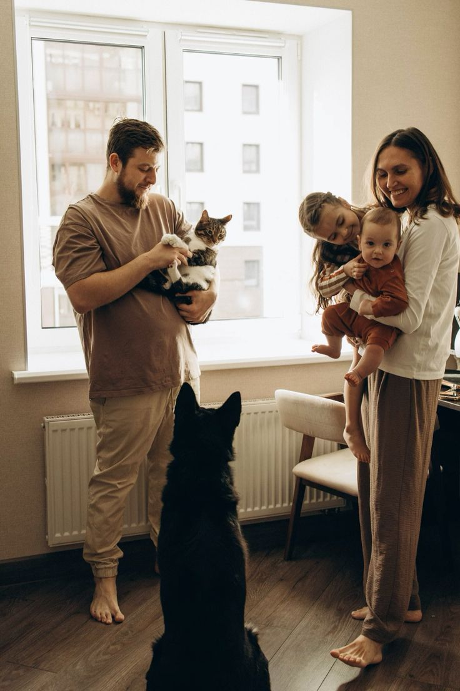
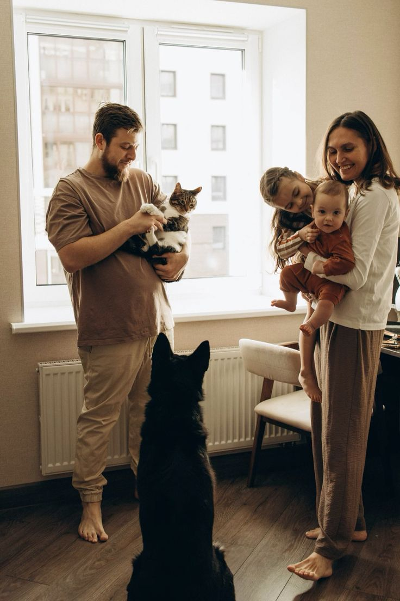

Уникальное место, где ароматный кофе встречается с теплом пушистых лап. Наше кафе — это дом для 20 усатых обитателей, которые ждут вашего внимания и ласки.
Здесь вы можете работать, читать, общаться с друзьями или просто отдыхать в компании наших мурлыкающих терапевтов. Все котики привиты, здоровы и обожают гостей!
Наши усатые жители

Барсик
Рыжий забияка, обожает играть с мячиками и сидеть на плече у гостей

Муся
Белоснежная красавица, любит ласку и нежные поглаживания за ушком
Кузя
Интеллектуал в очках, сопровождает гостей за чтением книг

Маркиз
Молодой аристократ, обожает бегать за лазерной указкой и висеть на когтеточке

Васька
Профессиональный соня, найдет самое уютное место и покажет мастер-класс по релаксу
Лилу
Модница с розовым бантиком, позирует для фото и обожает внимание
Специальные котоприятия

Йога с котиками: расслабляющая практика под мурлыкающий аккомпанемент

Рисуем котиков: арт-терапия с нашими пушистыми моделями

День рождения с котиками: незабываемый праздник для детей и взрослых
Забронировать посещение
Вместимость кафе ограничена для комфорта наших котиков
Помочь нашим котикам
Мы сотрудничаем с приютами и помогаем найти дом бездомным животным. Каждый месяц часть выручки мы перечисляем на помощь котикам.
Вы можете поддержать нашу миссию:
• Стать волонтером • Передать корм или лекарства • Взять питомца из приюта • Сделать финансовое пожертвование


 
